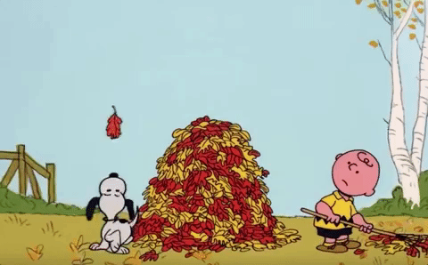
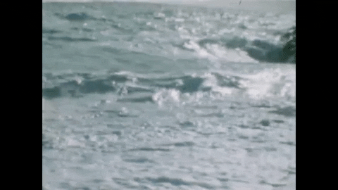

su · sur · rous | \ su̇-ˈ sər- əs , -ˈsə- rəs \
From Latin susurrus (whisper, humming), from susurrare (to whisper or hum), of imitative origin. Earliest documented use: 1826. It's not technically an onomatopoeia (a word that resembles a sound, such as plop or meow), but it's pretty close. Susurrus means a soft whisper or murmurring sound.
It's what you hear when the wind blows through fall leaves,
or waves are crashing on the shore.
Susurrous derives from the Latin noun susurrus, meaning "a hum" or "a whisper," and may be a distant relative of swarm (think of the collective hum of a beehive). Susurrus is itself an English noun with the meaning "a whispering or rustling sound" (Stephen King provides us with the example of "a violent susurrus of air"). Both the noun and the adjective (note that the two are spelled differently) are products of the 19th century, but they were preceded by the noun susurration, which in the 15th century originally meant "malicious whispering or rumor." Today susurrous is used to describe any kind of sound that resembles a whisper: a light breeze through a tree, perhaps, or the murmurs of intrigued theatergoers.